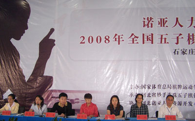
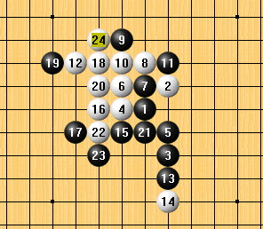
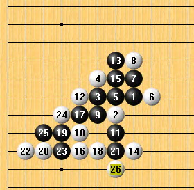
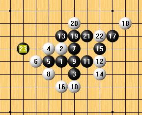
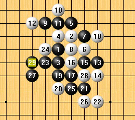
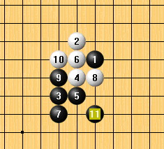
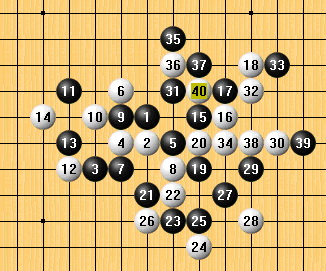
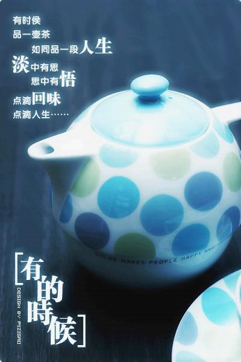
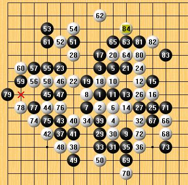
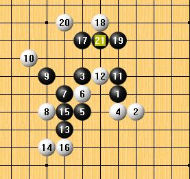

顾炜：难忘08国团赛
#1 顾炜：难忘08国团赛 作者：有志青年 发表时间：2008-7-10 14:22:56
【源文发表于中华连珠网http://www.shwzq.com】
6月5日晚，我终于踏上了前往石家庄的旅程。这是10年后再次到北京以外的北方城市参加比赛，感慨良多。值得高兴的是，10年前上海五子棋队北上远赴廊坊参加“亿万家杯”全国五子棋友好城市邀请赛，只有我和老顾（伟国）、章志强、葛凌峰四个人，而今天的上海五子棋队却是三队人马一起出征，10年的时间让上海五子棋真的有了翻天覆地的变化。从这一点说，我觉得很欣慰。我想同样对于上海第一代的五子棋人来说，今天的事情也一定能让他们觉得高兴。
大家在火车上非常兴奋，有拆棋的，有打牌的，也有打游戏机的。惟独俞满江同志上车之后就独自蒙头睡觉，让大家有点不爽。从上海到石家庄的火车每天只有2班，由于为了让大家减少请假时间，所以特地买了晚上的班次，一共需要16个多小时。不过比起10年前我们到廊坊，先乘了21个小时的火车到北京，再从北京转车又是好几个小时到廊坊，总算是减少了。火车上作息时间比较明确，息灯后大家都是夜神仙惯了，哪里睡的着，于是各自动脑筋想办法继续游戏。有的就拿手机当照明灯，有的就向小白借便携灯使用。组长（张轶峰）把这个小灯戴在头上，活象游戏机里面的管道工，超级有趣。就在这盏小灯的帮助下，我和张轶峰、小元一起拆棋到凌晨2点多才各自休息。
火车上的睡觉有点迷迷糊糊的，好不容易熬到早上5点半实在憋不住了，决定起身刷牙洗脸。原以为自己应该算起的早的了，没想到葛帅已经在抽烟了，而罗锦伟已经洗好脸了。等我和葛帅洗好回来，总领队黄民城也已起来了。我笑着对黄民城说：“看来还是一帮老家伙精神好呀。”
上海第一代棋手这些年对推动上海五子棋发展起了重要作用，尤其是当李洪斌远赴外地后，黄民城、葛凌峰和罗锦伟，他们三位更是做了很多工作。我想能在上海五子棋界活动是开心和幸运的，而有这些朋友更是开心和人生的幸运。特别是近几年，黄、葛总是带队出赛，为上海队取得好成绩付出了很多心血，罗锦伟这些年也从各种方面为上海五子棋发展搭建平台，如果有功勋奖的话，应该颁发给他们。
说了些题外话，但觉得却又是不可不说的话。好多年没有外出比赛了，其实这次比赛也是在和几位老朋友的聊天时定下的。但是那时的心情并未如现在这样落寞。看着车窗外的稻田，不由得思绪万千，归结一句话，人生的道路真是多变而莫测。
#2 Re:顾炜：难忘08国团赛 作者：有志青年 发表时间：2008-7-10 14:23:26
火车上无聊的时光很好打发，大家说说笑笑的，整节车厢里都是我们的声音。个别同志拆棋的专注还引来了乘务员和乘警的关注。坐在车窗边，看着大家嘻嘻哈哈的样子，自己也被感染了，心情少了些许忧郁，多了一些开心。6月6日下午2点多，我们顺利抵达石家庄北站。大家分包4辆出租抵达预订的宾馆，因为考虑到能有一个比较舒适和相对安静的环境，所以协会在组队时就决定另外寻找驻地。李洪斌和老戈早上就到了，大家在大堂碰面分外高兴，而且李洪斌、葛凌峰和我能一起参加一个比赛的情况已经将近10年没有了，这样难得的机会总是让人感慨和高兴的。
下午让大家先在房间休息休息，我和葛帅、黄民城、阿彪一起先到比赛场地勘察和报道。周彪是新一届协会负责人班子的成员之一，主要协助黄民城分管赛事工作，很尽心尽责，这次作为三队的领队，其实也是全队的副领队，为黄民城分担了不少事务工作。四个人其实很早就找到比赛场地了，但是因为宣传手册和网络上都讲明报到是在组委会指定宾馆，结果找这个宾馆花费了半小时。等找到却没看见报到的地方，再电话联系，原来转移到了比赛地点，四个人无奈地互相看了看，顶着个大太阳继续往回赶。等到报到工作全部弄好，也已经5点多了。
吃过晚饭，三队人马分别集中研究。因为我既是一队队员又是三队教练，所以基本上一队和三队的集训是在一起的。黄民城和周彪、罗锦伟一起去参加领队会议，结果发生了点小意外，参赛人员名单组委会按照各地上报的人员次序和相关原则给定掉了，这就和原先说好的领队会议结束后再报名单有点不吻合了。不过，最终各队领队也达成了统一意见，就按照组委会的决定来了。这个调整对上海一队、三队来说影响并不大，但是对二队确实存在了一定影响，把原先的策略破坏了。不过毕竟只是一个小插曲，不至于影响太多。晚上各队主要还是在想明天如何应对对手的情况。估计最沉稳的就是二队，因为和秦皇岛快乐连珠队的小朋友们下，应该不成问题。
#3 Re:顾炜：难忘08国团赛 作者：有志青年 发表时间：2008-7-10 14:26:18
6月7日上午，全国五子棋团体赛开幕，仪式比较简短，这点非常好。期间，全体人员为在四川地震中遇难的同胞默哀。

上午，上海一队同河北保定一队对阵，上海二队和秦皇岛快乐连珠队对局，上海三队则遇到天津队。当时大家认为，上海二队是最轻松也是压力最大的对局，因为完胜是肯定的，但是过程才是有压力，而且因为快乐连珠队实际只有3名队员，按照比赛规则，弃权的那名队员是不计算成绩的，也就是说上海二队尽管获得1分，但实际只有3个胜局，那么这在最终计算名次的时候很有可能产生微妙的影响。上海一队的对手属于完全没有概念的那种，不知道实力究竟如何的情况，所以大家心里多少有点忐忑。上海三队面对的是由穆家三兄弟为主组建的天津队，大家觉得有胜的机会，但是也有不小的难度。
我这次是被“逼”上一台的，本来最理想的是坐三台或四台，结果不知怎么回事情就被忽悠上了一台，这个位置可是比较烫屁股的，所以赛前的目标只是不失分。我的对手是一个女孩子，叫郑旭阳。看到她坐在一台，不免有些紧张。首轮是我布局，为了谨慎起见，我按照既定方案选择了“瑞星”。女孩子没有交换，这倒也是在我意料之中的。看了看身边的葛帅，对方居然开了“浦月”，愕然间不免也为葛帅捏了把汗，不知道对方研究了什么变化准备骗他呢。满江则开了“岚月”，对方交换后，满江执白变成了“新月”，对方下了2个从没看见的打点，估计应该可以拿下了。而张轶峰的对手开了“斜月”，张轶峰很自然的交换执黑作战。而此时我的对手也选择了最为正常的第2打点。但是接着的事情就让我紧张的心态一下子放松了，对手白6活三，以下就是最简单的VCT题目了，于是黑7以后就在考虑最简明的胜法。同时也在关注一下周围队员的情况。一队应该问题不大，于是开始关心二队和三队的情况。远远望去，三队都在低头沉思，二队的三名队员都在凝神思考，倒是三个小孩子无忧无虑的，还咬着棒棒糖。没多少时间，我的对手认负了。我出去没多久，张轶峰也结束了战斗获得胜利。再后面，当满江出来时，上海二队也已全部结束对局获得完胜。上海三队队员也相继出来了，三队以3：1的战绩战胜了天津队。尽管此时一队已经获胜，但是我们都在担心葛帅的情况。就在大家担心中，葛帅笑眯眯的走了出来，于是大家如释重负，一队获得了4：0。这样上海三支队伍在首天首轮的比赛中均获得了不错的成绩。
 
黑：俞满江六段（上海，胜）VS 白：张绍何（河北保定，交换） 黑：穆帅（天津）VS白：侯新元三段（上海，不交换胜）
#4 Re:Re:顾炜：难忘08国团赛 作者：有志青年 发表时间：2008-7-10 14:28:51
午饭前通过对阵表，我们知道下午上海一队和上海三队同城较量，心情轻松不少，就当是一次内部练习赛拉。而上海二队则将迎来一场硬仗，他们的对手是炫飞二队，实力不弱的一支由网络棋手组建的队伍。为此，大家赛前的方针是首先要把这支队伍中最弱的一环，也就是四台拿下，在此基础上再伺机取分。上海一队和三队同城之争，从整体实力来说，一队确实明显高了一个层面，但是并不是说三队没有机会。这次三队的人员组成是1名第三代棋手带领3名第四代棋手的结构，很有冲击力量。但是因为三队的队员对于这样大型的比赛毕竟参加的不多，因此无论在经验还是在战术布置上难免有所欠缺。实战中，双方还是以保存实力和体力为优先考虑原则，因为第三轮对大家很可能是一场艰苦的战斗。最终，上海一队幸运地获得完胜。对于三队来讲虽然输了，但是冲击上游的机会依然存在。
而上海二队和炫飞二队之间的较量则是一波三折的进行着。薛文曦的对手是个女孩子，根据第一轮的观察判断，应该是这支队伍实力最弱的一台，因此以薛的实力应该是没有问题的。实战也证实了这点，女孩子对一些基本定式的掌握还很不够，被薛比较简单的VCT追胜了。虽然取得了一分，但是大家都不敢大意。因为其他三台的形势还扑朔迷离。首先，坐镇一台的朱建锋遭遇龚胜的狙击，因为选择了一个他本人并不熟悉而且对黑棋也不是有利的变化，结果10多手就陷入疏星苦战。好几次我们旁观的看的心惊肉跳，都觉得小朱要挂了，但是每次他依然神奇般地找到了强防。而另一边，不好的消息传来，戈翀宇在银月变化中后手完败，这样小薛获得的1分就成为了泡影，双方又回到了同一起跑线。赛场外，教练们对老戈没有按照教练意图而贸然采用黑优局的变化进行了严肃批评。我们焦急地等待着最后2台的情况，小朱第一个走了出来，如释重负地告诉我们“和了”。大家都很高兴，因为黄宇峰当时的局面明显是黑优，不可能输掉的棋。这样最差我们也是打平，尽管会有遗憾。再过了一会儿，黄宇峰走了出来，大家围拢上去问他结果，他又是那种常见的不好意思的笑笑，说“赢了”。于是大家弹冠相庆，感到上海队的好运正在开始。
黑：马少红（炫飞2）VS 白：薛文曦 六段（上海2，交换，胜）

#5 Re:顾炜：难忘08国团赛 作者：有志青年 发表时间：2008-7-10 14:29:57
第2轮结束没多久，裁判组将第3轮的对阵贴了出来。上海一队居然再次遭遇同城兄弟，看来这次真的要进行一场德比大赛了。而上海三队则遇到了北京五子棋联合队。由于比赛规则的规定，当时上海二队觉得第3轮有可能会同浙江队或北京那威五子棋俱乐部队遭遇，因此将李洪斌递补上阵。可是现在却是同城争斗，未免有点遗憾。不过来之前我就和葛帅、民城戏言，说：“我、葛凌峰和李洪斌在同一个比赛上场的情况是极为少见的，这次总算有机会圆梦了。”没想到这么早就应验了。
上海这次组建三支队伍，其实也是想弥补第一届因为赛事冲突无法参赛的遗憾。尽管觉得有希望冲击冠军，但是毕竟是第一次参加这样的比赛，在经验上还是比较欠缺的，所以当时在内部负责人会议上，我提出力争两支队伍进入前三的基本目标，这无论是从当时还是现在来看，都是比较符合实际的。客观上讲，一队和二队的整体实力没有什么大的差别，互有优势也各有不足，不过，因为二队有李洪斌作为教练和替补，因此在排兵布阵和战术指导上确实有很大变化和好处，这一点是一队不及的。双方最终决定还是认真下一场，但前提是保存必要的体力和技术。而对于三队，我和领队周彪分析商议后，要求他们必须拿下这场比赛，这样他们才不会和第一集团差距过大。
第3轮开始了，我和朱建锋对局。小朱是继田溢昉后第2位具有天赋型的棋手，他的长处是计算精深，和这样的选手对局是一种心跳加上恐怖的刺激感。实战，我在瑞星的一个变化中，黑棋选点过快，结果下了之后才发现属于不利的变化。此后陷入苦防，尽管最后经过沧海桑田的转换，最终还是输在了左上角，但是这局棋倒是把我怎么防御的心态练出来了，也成全了我在此后4轮全部和棋的结果。其他三台战况分别是张轶峰输给了李洪斌，葛凌峰胜黄宇峰，俞满江则险胜薛文曦。双方2：2打平，也算是皆大欢喜吧。而没多久结束的上海三队也传来捷报，大家放开手脚，4：0获得胜利。

黑：吴恺（上海3，胜）VS 白：吴言（北京，不换）

黑：田汉法（北京）VS 白：郑蔚楠（上海3，不换，胜）
这一天应该算是上海队的幸运日吧。
#6 Re:顾炜：难忘08国团赛 作者：有志青年 发表时间：2008-7-10 14:30:51
石家庄确实不是一个非常值得旅游的地方，至少我是这么觉得。尽管作为中原大地兵家必争之地，但是石家庄可以给我们游览的地方真的不多。问了好几个出租司机，回答都是非常的一致，石家庄？没什么好玩的地方。参加这次比赛的心情非常复杂，既是兑现一场已经承诺了的比赛，也是一次放松心情的旅程。第一天的比赛结束后，整个人感到了一丝久违了的轻松。胜负于我个人而言，已是很久远的事情了，但是面对整个队伍和整个上海五子棋来说，却又是这样的重要，无法不去认真。
晚上，大家聚在一起拆棋的场景真是热闹。看着葛帅和队员们聚在一起研究变化，看着洪斌兴致勃勃地给年轻棋手们讲解一些变化，看着几个人在手提电脑前研究拆解的样子，真的开始有些恍惚和疑惑，这是五子棋吗？！这是10年前我为之努力和投入的五子棋吗？！10年前的我是不是和现在的年轻棋手一样，为了一个变化可以投入地研究到忘我，是不是会为了一个比赛而紧张备战到黎明。或许这正是10年前的我，只不过当时确实没有想到不过10年光景，五子棋已经发展到今天的模样。
周彪和小白真的很细心，在大家研究的热火朝天的时候，为大家买来了西瓜和苹果。比赛期间，能吃上西瓜真的很令人高兴。几乎每个人都不顾自个儿形象地开始啃起了西瓜，实在大了点。可惜没有拍下这些照片，否则今后看看一定有趣的很。所以说，人生总是充满了很多小插曲，每个小插曲就是一段故事，就是一段人生感悟，人生也就是这样被积累充实的。想到去时的心情和现在的心情，隐隐间觉得有点不同了，毕竟欢乐和希望还是堆积在未来的道路上的。
一直到各队领队催促了好几遍，大家才回房休息。虽然可以理解大家的认真、紧张和焦虑的心情，但是比赛前需要有充足的睡眠才是最重要的。差不多是凌晨1点半了，我还是没有睡意，迷迷糊糊地躺在床上，想了很多事情。毕竟，和朋友们一起并肩作战的感觉还真的很好，希望不要辜负大家了，呵呵，带着些许的欣慰终于沉沉睡去。
#7 Re:顾炜：难忘08国团赛 作者：有志青年 发表时间：2008-7-10 14:31:15
比赛进入第2天，第一场上海一队和北京那威五子棋俱乐部队对阵，一场火拼是逃不掉的。想想10多年了，上海与北京两地五子棋界一直渊源甚深。10多年前，北京五子棋给我的感觉是人才济济，邓京辉、张进宇、刘彤、殷立成、陈伟、于京平、崔悦、白滔、李栋、苏梁、邵小冬、陆遥......那真是高手如云的时期。那时全国各地绝对以北京五子棋界为中心，为什么，因为那里的技术是代表了中国当时最先进最高水平的。上海那时尽管起步早，但毕竟差着一大截。不仅个人力量欠缺，团体作战更是难忘项背。如今，10多年过去了，上海五子棋赶上来了，而北京五子棋界则面临着新老更替的局面，因此说在这次的比赛上面北京队没能占上风。但是我想以北京五子棋的底气，假以时日，一个崭新的北京五子棋形象或许又会在我们眼前闪现。我的对手是殷立成七段，是北京五子棋目前还在一线作战硕果仅存的几位老将之一。北京老棋手的特点是对一些老变化的研究比较熟悉，比赛前我猜对手可能会采用老变化，而且很可能会开名月。但是名月变化实在浩繁，平时也不大看，所以睡前和醒来以后粗粗看了几个变化。实战当殷立成开了名月以后，我立刻选择交换。但是当他的白6下出后，我不禁为之叫苦。因为就是这个6脑子里觉得有印象，所以没看，认为对方不会开，结果事与愿违。黑7其实我是知道怎么下的，但是当时觉得一来不熟悉后面的杀法，二来也生怕殷立成不知在哪里给我挖个坑，所以就决定早早脱谱，尽管有风险，但是我认为不会输。具体实战的讲解，殷老师在他的文章（见中国连珠网）中已经详细说了，就不再赘言。总之有惊无险的和了以后，得知满江胜了仇云飞，其他都和了，总算是不错的结果。
而上海二队和上海三队分别对抗炫飞1队和2队，最终双双获胜，这样的成绩对上海三支队伍，应该是很不错了。
#8 Re:顾炜：难忘08国团赛 作者：有志青年 发表时间：2008-7-10 14:32:38
这天下午的第一场，上海一队遇到了浙江队，上海二队和北京那威五子棋俱乐部队对阵，上海三队好象是和江苏一队遇到了。赛前教练组作了简单分析和战术安排，考虑到浙江队的选手，除了对陈新还略知一二外，其他几人都没有交过手，不知道实际状况，我们当时分析棋情基本不不会上场，一定会由其他四人上场，然后可能会用到棋情的研究来对付一队，因此，这时对一队的任务是打平即可。对于二队，我们当时觉得仇云飞状态不好，从他身上拿取一分的可能性很大，而朱建锋对殷力成，因为是对方开局，所以取胜的概率也不小。其他两台守和即可。对于上海三队，我们因为不熟悉浙江一队的实力，初步判断双方最多也是伯仲之间，不过一二台的两名选手实力比较强些，所以对三队的指标是四台拿分，前三台保证不失分。实战中，一队确实遇到了本场比赛以来最强硬的对手。双方居然开出4盘瑞星，这时我已经隐隐约约觉得状况成问题了。三台的俞满江和对手一上来就是瑞星大定式的样子，看来和棋基本是肯定的了。二台的葛凌峰白12用了我以前研究的变化，虽然有点苦，但是和陈新拼个和棋问题应该不大。四台因为离的远我不知道什么变化。浙江一台的戴晓涵面对流行白12，黑13选择了一个很少见的变化。对于这个变化以前的结论我大致听过一点，似乎是白好黑不死。当时也没多想，就按照我理解的走法应对了2手，但是对方的黑17是我从来没见过的变化，当时脑袋有点蒙。由于昨晚又是只迷糊了3个小时，早上和殷力成一战又防的辛苦，所以现在觉得昏沉沉的，有种不想计算的冲动。但是身为一台，即便要输，也不能是第一个倒下的。所以在黑17上面我是花费了很多时间去计算，不过说是计算，效率一点也不高，毕竟过度劳累以后确实对计算是产生很大影响的。大概用了40分钟，我才决定了采用的变化，当时就觉得又是一局苦防，事后才知道这原来已经是别人大致研究过的白不好的变化。实战28手似乎有点疑问，不过当时总觉得这样防御比较坚实。但是黑29后白棋全面失控，进入了漫长而痛苦的防御阶段。黑33后，我开始了又一次的长考，最终决定采用实战的34手是唯一可以导入乱战的方法。实战的每一步防御都是相当痛苦而选择艰难的，好几次都不想计算了好想随便选个点算了，但是当看到身边的队友还在力拼，我觉得没有理由放弃。黑37是整盘棋令我非常痛苦的第3个点，或者说也是最后一个点，因为只要防住了这点，就没有问题了。由于对方也在考虑的关系，我原本剩余不多的时间开始变得比对方略多一些了，或许这是一个良好的开端。白38的防御我是为了在时间上的优势，计算的过快了，我粗粗一扫，看到黑棋的VCT，白的在盘端有个唯一防，此后黑无杀，于是就迅速走了。对手可能是看到我走的过快，也可能和我思考的一致，最后选择了一步防御性的等着。也就是这一步，让我看到了转身的希望。事后拆解，其实黑39有另一种极为简短的VCT杀法，而实战我们双方都忽略了。真是运气哦。此后双方攻防转换，我在第84手，比对方多出2分钟的情况提和了。虽然盘面上黑棋还有一个局部可以攻击，但是我早就计算好了大致的防御线路，所以也丝毫不怕对手不肯和棋，毕竟我比他多了2分钟。

黑：戴晓涵 五段（浙江，交换）VS 白：顾炜 八段（上海1）5A=10 白84和
当我最后一个步出赛场时，我知道张轶峰在和易海力对战中，对方采用了相同的黑13，结果张轶峰在采用另一个防御变化时防的过弱导致速败。而其他2台都和了，所以我们队最终以小比分落败。不过也好，至少让二队可以有所警惕。
二队战胜了对手，其中一、三台获胜，值得一提的是小朱对老殷的那局，也不知道老殷是不是上午拼凶了，这局简直就象送分一样输的简单，让人忍俊不禁。而三队一台樊星岑获胜，三台阿布和棋，而小元在面临即将可以胜利的时候，严重计算出错，导致到手的鸭子飞了，寄予希望最大的四台吴恺也遭遇强敌，最终落败，这样三队输了。

黑：殷立成 七段（北京那俱）VS 白：朱建锋 六段（上海2，交换）5A=6 黑21胜
这轮结束，大家作了简单总结，感到教练组赛前作的安排基本还是准确的，就是在具体应对上还要下点工夫。
#9 Re:顾炜：难忘08国团赛 作者：有志青年 发表时间：2008-7-10 14:32:59
小败浙江队后，上海一队的士气确实有点低迷。由于比赛时间设置的非常紧密，因此当天下午要打2轮，对于我和葛凌峰来讲真是体能的考验呀。我们接下来遭遇的是河南队，上海二队则同江苏一队碰面，这是我们多少有点没想到的，原来以为应该和浙江队对阵了。河南队最有名的应该是坐镇三台的梅凡了，他的实力还是有数的。不过我对坐镇一台的荆卫军其实倒是挺上心的，因为从网上得知他是河南第一高手，而且通过他和浙江队戴晓涵的对阵，感觉实力不弱。当时的想法还是老老实实地下和棋，把拿分的任务留给第二台和第四台。可是事情的发展往往出乎我们的预料，葛帅布局疏星，执黑居然走了一个当时研究认为黑苦的变化。当然，我知道对这个变化葛帅有很深的研究，期待的是白乱攻。但是自从世界团体锦标赛上，中国队采用这个变化，下3盘输3盘后，几乎是棋手都了解了。实战，没过30手，葛帅无奈地推枰认负，这让我相当吃惊，也打乱了整个作战计划。当时我执黑和荆卫军大战瑞星，由于他的白14采用了一个相对较弱的变化，我就依稀按照脑子里的印象和对局面的判断开始展开攻击，到葛帅输棋之前，黑的势力都非常强，将局面牢牢控制着，如果正常行棋，可以说这是一局毫无危险的棋局。但是因为葛帅的输棋，让我不由感到压力陡增，于是在接下来的时间想的都是如何追胜。可是遗憾的是总是有那么1个强防导致我无法取胜，到了40多步后，黑已经明确无胜了。正当我考虑如何以先手防御的时候，对方落子后提和。我想或许大家都很累了，而且这个局面也确实没有什么优势了，于是也就接受了和棋的提议。应该说还是很幸运的。出来没多久，听说俞满江同梅凡打平，张轶峰则战胜对手，总算大分上面没输，这样还没有跌出争夺前三的位置。
上海二队同江苏一队的争斗也是一波三折，原来觉得江苏一队不会很强，结果，一旦遭遇双方拼搏的很凶。一台的小朱又是选择了一个对黑棋不利的变化在下，结果被对方坐镇一台的MM王珏满盘追击，对方错过了一次杀后，提出和棋，小朱由于不知道自己队伍的情况，所以不同意，结果一个疏忽终于取得了开赛以来的首败。不过总算好，其他三台表现稳定，最终还是胜了江苏一台。与第2名浙江队保持了半分的领先优势。
而上海三队也输给了对方，基本退出争夺前八的名次了。
#10 Re:顾炜：难忘08国团赛 作者：有志青年 发表时间：2008-7-10 14:33:21
6月9日，比赛的最后一天，也是整个比赛的最后一轮。上海二队和浙江队相遇，前者只要打平就是冠军。上海一队和江苏一队相遇，这一仗必须取胜，而且最好是大比分取胜，因为这次比赛的规则是大分相同看胜局数，对手分被列在第3等级。尽管这条规则是针对所有队伍的，但是里面有一个明显的弊端，就是大凡强队相遇，获得的胜局数不会很多，而一支实力中等偏上的队伍，在下半区“扫荡”弱队，到最后积累的大分很有可能不低于实力强过它的队伍，但因为胜局数的关系，它却可以稳居在前。上海三队和炫飞一队遭遇，如果战胜对手，还是有可能进入前十的。从教练组充分讨论考虑后的决定来看，我认为是完全正确的。作为半分领先的上海二队不需要拼命，只需要稳定地保持半分的优势就可以了。当然，这个稳定绝不是外界有人理解为的消极守和，而是积极守和的战术需求。不过唯一有一点遗憾的是，一、四台和的太快，按照我个人的考虑，小薛应该相机而动。至于黄宇峰的落败，属于中了对方研究，没有什么惋惜的。而老戈在优势情况下因为看到黄宇峰落败而拼到最后一秒钟超时，我觉得也可以理解，因为输一台和输二台在那种状况下是一样的。尽管上海二队没有拿到冠军，但是我仍然为这些队员感到高兴，每个人都是好样的。
上海一队和江苏一队的战斗既要胜又要大比分胜，这才是我们觉得头疼的。结果我和满江考虑了一夜，最终决定布黑优势局给对方。结果当天比赛，我和满江分别布了岚月和云月，对方自然提出交换，我们各自给对方安排了一个陷阱，由于满江的陷阱比较早所以用到了，最后如愿以偿的获得胜利。而我的对手则早早变招，但也给我的白棋找到了逆转的机会。到白14我就觉得已经确立了很大的优势，但是此后的算杀时出现了一个严重误算，等到察觉时，已经很难转身了。此后的防御是大汗淋漓的防守，王珏继续拿出虐待小朱的劲头来做棋。在有下方的黑棋势力雄厚，白棋几度接近崩溃的边缘。或许是对手有时感太浓，走了一手非常强烈的棋子，一时几乎找不到防点。但是当再次搜索时发现了唯一的防御。等我的白棋落下，对方似乎也察觉到了，流露出些许的无奈。本来我的时间不多了，但是对方在思考的过程中，让我的时间又渐渐多了出来。当双方进入残局时，对方还剩下10多秒的时间。这之前我只知道满江和葛帅胜了，但是四台的情况我不清楚，所以只能期待对方超时。可是最不可思议的事情发生了，棋钟出现了问题，当对方还剩余6秒的时候，接连下了4、5颗子但是时间没有走。等到我发现向裁判提出异议时，裁判重新换钟，可是这期间需要较多的时间过程，因为6秒确实无法调出来。而在裁判调钟的时候，我也知道基本上不可能胜了。因为在实战过程中，对方很紧张，不可能把所有空全部看清，所以叫PASS的话要稍微思考一下，但是等裁判调钟好以后，这段时间对方足够把剩余的空格看清楚，不需要再考虑是否PASS了。看来是老天不希望我胜。等裁判钟调好，我尝试了一下，果然，下3颗子才走一秒钟，而盘面上的空格只有12个。当224子落下后，看着最后的一个空格，我提和了。搞笑而无奈的一局，或许有机会创造一个纪录吧。为了弥补“不良影响”，赛后专门向王珏作了解释打了招呼。还算好，张轶峰胜了，我们这支队伍获得了第三名。
上海三队输了。阿布发挥良好，同对方的二台打平，吴恺也和了，周彪输了，樊星岑在必胜的情况下输给了吴镝，也最终成全了对方以不败战绩获得最佳一台称号。
全国团体赛结束了，上海三支队伍完全达到了赛前制订的目标，这和队员、教练和领队，包括在上海的陪练棋手、会员的努力是分不开的。对这一点，我相信大家都是满意的。当然不足和遗憾肯定会有，我想可以成为今后努力的目标。
#11 Re:顾炜：难忘08国团赛 作者：有志青年 发表时间：2008-7-10 14:33:48
花了这么些时间，终于把这次国团赛的行记写完了。这不是一篇单纯的对战记录，里面包含了我的一些想法和难以名状的心情。12年前，1996年夏，我进入了上海五子棋圈子。10年前，当网络五子棋起步时，1998年，我给自己起了一个“行云流水”的名字。这一用就是整整十年。十年里面发生了太多的事情，棋里棋外，有足够多值得我留下回忆和感慨的了。有时想想，一个人有几个十年呢，十年来，现在的我和当初的我已经有了太多的不同。原来只是想成为一个优秀棋手的我，后来关心的却是五子棋的发展与地区组织的建设，当上海组织建设日趋成熟的时候，我也一度觉得自己还是喜欢当一名棋手，但是现在又不同了，毕竟时间在走，事情在发生，人的想法也会不断变化。
我一直在想的是，如何给上海的棋手们一个安定舒适的环境交流，如何让协会增强凝聚力，如何让五子棋为更多人喜爱。这个或许和一些第一代的棋手的想法是一致的。十年来做的这些，我想应该可以向当年引领我进入五子棋这么圈子的老师——李北峰先生交上一份比较满意的答卷了。上海五子棋应该会进入一个崭新的时期，年轻的棋手终将逐渐承担起相应的重要的责任，只有这样，上海五子棋才是富有活力和具有长久生命力的。
一个月前，我曾经写下了一首《浪淘沙》，我的心情已经包含其中。2008国团赛是行云流水的最后一战，那个比赛结束后，行云流水就已经随着过去的时间归入历史，不复再出矣。
最后，祝愿五子棋在中国的发展越来越好。
#12 Re:顾炜：难忘08国团赛 作者：五子天下 发表时间：2008-7-11 14:41:02
恭喜恭喜 再接再厉~#13 Re:顾炜：难忘08国团赛 作者：风炎 发表时间：2008-7-11 20:37:14
2008国团赛是行云流水的最后一战，那个比赛结束后，行云流水就已经随着过去的时间归入历史，不复再出矣。
#14 Re:顾炜：难忘08国团赛 作者：张轶峰 发表时间：2010-4-23 12:11:40
楼上的话好凄惨